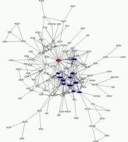

Inspired by an
old
thread (Message-ID: <19981205015519.I2828@kitenet.net>) on the
debian-devel mailing list started by
Joey Hess <joey@kitenet.net> graphing the
debian-keyring
in 1998, I set out to do the same myself with the current keyring and available
packages. I wrote perl programs to parse the output of the debian-keyring to
the file format for each of the graphing programs I could find. You could use
these to graph any
gpg keyring file, and is
used by several groups to
graph the results of their keysigning
parties.
In decreasing order of how much I liked the results: 
Here's a smaller (56k, 1002x1107) zoomed out shot of the core of neato's
output:
debian-keyring-core.neato.png.
I recommend viewing the PostScript files with
gv because they are big.
Output is from the 2000.08.30 keyring. It is my intention to keep these files
up to date.
(dot and neato are both part of
graphviz, and have the
same input file format.)
As Joey Hess did, the arrows in my graphs are pointing from signer to
signee.
Comment on this page.
sig2dot index
code index
Darxus' Home Page
Sun May 5 17:14:33 EDT 2002
Valid HTML 3.2.
{kind=link}
{kind=link}
{kind=link}
{kind=link}
{kind=link}